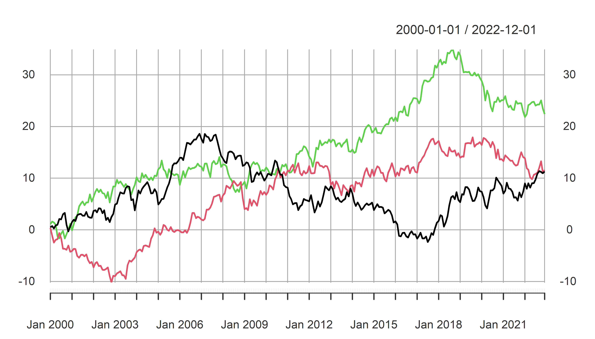
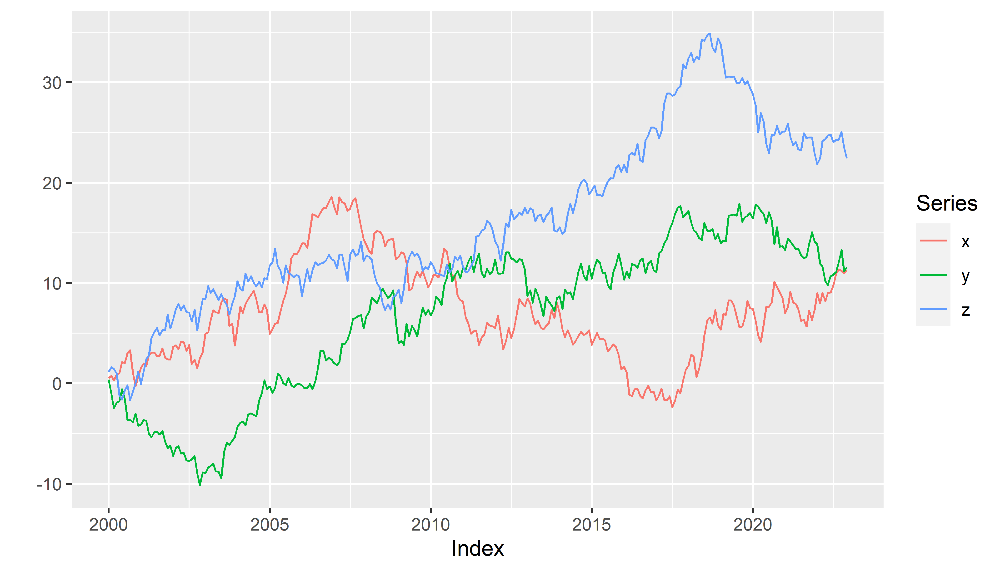

EviewsR: A Seamless Integration of Eviews and R
EviewsR 


About EviewsR
EviewsR is an R package that can run EViews program in R. It also adds eviews as a knit-engine to knitr package, so that users can embed EViews codes in R Markdown and Quarto document.
Installation
EviewsR can be installed using the following commands in R.
install.packages("EviewsR")
OR
devtools::install_github("sagirumati/EviewsR")Setup
To run the package successfully, you need to do one of the following
Don’t do anything if the name of EViews executable is one of the following:
EViews13_x64,EViews13_x86,EViews12_x64,EViews12_x86,EViews11_x64,EViews11_x86,EViews10_x64,EViews10_x86,EViews9_x64,EViews9_x86,EViews10. The package will find the executable automatically.Rename the Eviews executable to
eviewsor one of the names above.Alternatively, you can use
set_eviews_pathfunction to set the path the EViews executable as follows:
set_eviews_path("C:/Program Files (x86)/EViews 10/EViews10.exe")Usage
Please load the EviewsR package as follows:
```{r} .
library(EviewsR)
```Ways to use EviewsR
The package can work with base R, R Markdown or Quarto document.
EviewsR along with R Markdown or Quarto document
After loading the package, a chunk for Eviews can be created by supplying eviews as the engine name in R Markdown or Quarto document as shown below :
```{eviews}
#| label: fig-EviewsR
#| eval: true
#| fig.subcap: ["X graph","Y graph"]
#| fig.cap: "EViews graphs imported automatically by fig-EviewsR chunk"
'This program is created in R Markdown with the help of EviewsR package
wfcreate(page=EviewsRPage,wf=EviewsR_workfile) m 2000 2022
for %y EviewsR package page1 page2
pagecreate(page={%y}) EviewsR m 2000 2022
next
pageselect EviewsRPage
rndseed 123456
genr y=@cumsum(nrnd)
genr x=@cumsum(nrnd)
equation ols.ls y c x
freeze(OLSTable,mode=overwrite) ols
freeze(EviewsR_Plot,mode=overwrite) y.line
wfsave EviewsR_workfile
``` 

The above chunk creates an Eviews program with the chunk’s content, then automatically open Eviews and run the program, which will create an Eviews workfile with pages containing monthly sample from 2000 to 2022. The program will also save an EViews workfile named EviewsR_workfile in the current directory.
The eviews chunk automatically returns the outputs of each equation object as a dataframe, accessible via chunkLabel$pageName_equationName. For example, The \(R^2\) of the ols equation object is 0.044951, which can be accessed using `r EviewsR$eviewsrpage_ols$r2`. We can obtain the table object by chunkLabel$pageName_tableName. Therefore, EviewsR$eviewsrpage_olstable will give us the OLSTable object as dataframe. Note the underscore (_) between the pageName and equationName, and between the pageName and tableName.
EviewsR$eviewsrpage_ols$r2
#> [1] 0.044951
EviewsR$eviewsrpage_ols$aic
#> [1] 4.310163
K = EviewsR$eviewsrpage_olstable[c(6, 8, 9), 1:5]
colnames(K) = NULL
knitr::kable(K, row.names = F, caption = "Selected cells of EViews table object")| Variable | Coefficient | Std. Error | t-Statistic | Prob. |
| C | -0.301413 | 0.260956 | -1.155033 | 0.2491 |
| X | -0.051410 | 0.014316 | -3.591137 | 0.0004 |
The EViews series objects are also imported automatically as dataframe (by default) or xts objects (if we use chunk option class="xts"). They are accessed via chunkLabel$pageName.
EviewsR$eviewsrpage |>
head()
#> date x y
#> 1 2000-01-01 -0.06062345 0.34705763
#> 2 2000-02-01 0.40287977 0.04959103
#> 3 2000-03-01 1.13387526 0.56589164
#> 4 2000-04-01 1.34089330 1.35264827
#> 5 2000-05-01 0.54596099 1.05434874
#> 6 2000-06-01 0.96869514 0.61693341EviewsR along with base R
The create_object() function
The function create_object() can be used to create an Eviews object in the existing EViews workfile.
create_object(wf = "EviewsR_workfile", action = "equation", action_opt = "",
object_name = "eviews_equation", view_or_proc = "ls", options_list = "",
arg_list = "y ar(1)")create_object(wf = "EviewsR_workfile", object_name = "x1", object_type = "series",
expression = "y^2")The eviews_graph() function
EViews graphs can be included in R Markdown or Quarto document by eviews_graph() function.
To create graph from existing EViews series objects:
eviews_graph(wf = "EviewsR_workfile", page = "EviewsRPage", series = "x y",
mode = "overwrite", graph_options = "m")

We can also create objects from an R dataframe
Data = data.frame(x = cumsum(rnorm(100)), y = cumsum(rnorm(100)))
eviews_graph(series = Data, group = TRUE, start_date = "1990Q4",
frequency = "Q")
The eviews_import() function
Data can be imported from external sources by eviews_import() function.
eviews_import(source_description = "eviews_import.csv", start_date = "1990",
frequency = "m", rename_string = "x ab", smpl_string = "1990m10 1992m10")Alternatively, use the dataframe as the source_description.
eviews_import(source_description = Data, wf = "eviews_import1",
start_date = "1990", frequency = "m", rename_string = "x ab",
smpl_string = "1990m10 1992m10")The eviews_pagesave() function
Similar to Eviews workfile, an Eviews page can be saved in various formats by eviews_pagesave() function.
eviews_pagesave(wf = "eviewsr_workfile", page = "EviewsRPage",
source_description = "pagesave.csv", drop_list = "y")The eviews_wfcreate() function
An Eviews workfile can be created using eviews_wfcreate() function in R.
eviews_wfcreate(wf = "eviews_wfcreate", page = "EviewsRPage",
frequency = "m", start_date = "1990", end_date = "2022")Create a workfile from a dataframe
eviews_wfcreate(source_description = Data, wf = "eviews_wfcreate1",
page = "EviewsR_page", frequency = "m", start_date = "1990")The eviews_wfsave() function
An EViews workfile can be saved various output formats using eviews_wfsave() in function in R.
eviews_wfsave(wf = "eviewsr_workfile", source_description = "wfsave.csv")The exec_commands() function
A set of Eviews commands can be executed with the help of exec_commands() function in R.
exec_commands(c("wfcreate(wf=exec_commands,page=eviewsPage) m 2000 2022"))eviewsCommands = "pagecreate(page=eviewspage1) 7 2020 2022
for %page eviewspage eviewspage1
pageselect {%page}
genr y=@cumsum(nrnd)
genr x=@cumsum(nrnd)
equation ols.ls y c x
graph x_graph.line x
graph y_graph.area y
freeze(OLSTable,mode=overwrite) ols
next
"
exec_commands(commands = eviewsCommands, wf = "exec_commands")The export_dataframe() function
Use export_dataframe() function to export dataframe object to Eviews.
export_dataframe(wf = "export_dataframe", source_description = Data,
start_date = "1990", frequency = "m")The import_equation() function
Import EViews equation data members into R, R Markdown or Quarto.
import_equation(wf = "EviewsR_workfile", page = "EviewsRPage",
equation = "OLS")To access the imported equation in base R:
The import_graph() function
Import EViews graph objects(s) into R, R Markdown or Quarto.
import_graph(wf = "eviewsr_workfile")

To import only graphs that begin with x:
import_graph(wf = "exec_commands", graph = "x*")

The import_kable() function
Eviews tables can be imported as kable object by import_kable() function. Therefore, we can include the
import_kable(wf="EViewsR_workfile",page="EviewsRPage",table = "OLSTable",
caption = "Selected cells of EViews table imported using import\\_kable() function",
range = "r7c1:r10c5",digits=3)| Variable | Coefficient | Std. Error | t-Statistic | Prob. |
|---|---|---|---|---|
| C | -0.301 | 0.261 | -1.155 | 0.249 |
| X | -0.051 | 0.014 | -3.591 | 0.000 |
The import_series() function
Use import_series() function to import data from EViews to R as a dataframe. The function creates a new environment eviews, whose objects can be accessed via eviews$pageName.
import_series(wf = "eviewsr_workfile")To access the series in base R:
eviews$eviewspage |>
head()To import the series as an xts object:
import_series(wf = "eviewsr_workfile", series = c("x", "y"),
class = "xts")The import_table() function
Import EViews table objects(s) into R, R Markdown or Quarto.
To import all table objects across all pages
import_table(wf = "EviewsR_workfile")To import specific table objects, for example OLSTable
import_table(wf = "EviewsR_workfile", table = "OLStable")To import table objects on specific pages
import_table(wf = "EviewsR_workfile", page = " EviewsRPage")To access the table in base R (eviews$pageName_tableName)
eviews$eviewspage_olstableThe import_workfile() function
Import EViews equation data members, graph, series and table objects(s) into R, R Markdown or Quarto.
To import all equation, graph, series and table objects across all pages
import_workfile(wf = "EviewsR_workfile")

To import specific objects
import_workfile(wf = "exec_commands", equation = "ols", graph = "x*",
series = "y*", table = "ols*")To import objects on specific page(s)
import_workfile(wf = "exec_commands", page = "eviewspage eviewspage1")The rwalk() function
A set of random walk series can be simulated in R using EViews engine, thanks to rwalk() function.
rwalk(wf = "eviewsr_workfile", series = "X Y Z", page = "", rndseed = 12345,
frequency = "M", num_observations = 100, class = "xts")xts::plot.xts(rwalk$xyz, type = "l", main = "")
ggplot2::autoplot(rwalk$xyz, facet = "")

Demo
The demo files are included and can be accessed via demo(package="EviewsR")
demo(create_object())
demo(eviews_graph())
demo(eviews_import())
demo(eviews_pagesave())
demo(eviews_wfcreate())
demo(eviews_wfsave())
demo(exec_commands())
demo(export_dataframe())
demo(import_equation())
demo(import_graph())
demo(import_kable())
demo(import_series())
demo(import_table())
demo(import_workfile())
demo(rwalk())
demo(set_eviews_path())Template
Template for R Markdown is created. Go to file->New File->R Markdown-> From Template->EviewsR.
Please download the example files from Github.